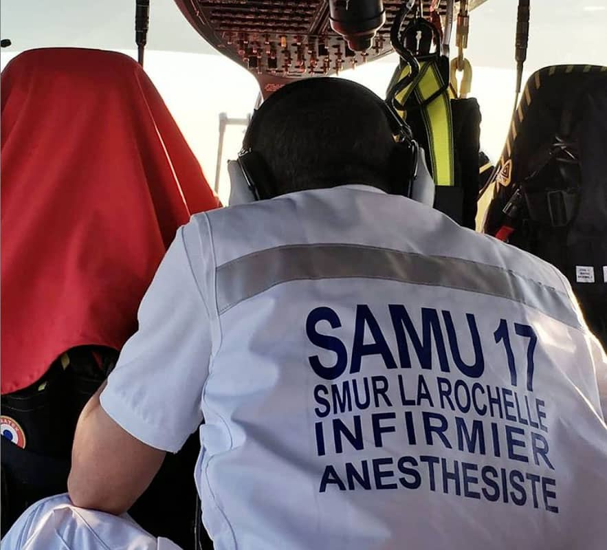

Nos missions
L'anesthésie
Au bloc opératoire, l'infirmier-anesthésiste est habilité à conduire seul, à la condition qu'un médecin anesthésiste puisse intervenir à tout moment, tous les types d'anesthésie pour toutes les chirurgies possibles, comme défini par son décret de compétences. Il surveille tous les paramètres vitaux du patient, et adapte en temps réel l'anesthésie, au moyen de tout l'arsenal thérapeutique dont il dispose.
Urgences et Réanimation
Au sein d'une équipe pluridisciplinaire d'un Service Mobile d'Urgence et de Réanimation (S.M.U.R), l'infirmier-anesthésiste est amené à participer au secours à personnes, en collaboration avec un médecin-urgentiste et un ambulancier. Bien souvent la collaboration s'étend aux pompiers et aux services de police. Il participe à la coordination des soins, dans un contexte souvent dramatique. Les soins sont variés, et englobe toute la spécialité, que ce soit en terme de réanimation, de pharmacologie, et nécessitent une formation constante dans tous ces domaines, et ce quel que soit le domaine d'intervention, terrestre, aérien ou maritime.
Gestion de la douleur

De par son expertise et sa formation, l'IADE (Infirmier-Anesthésiste Diplômé d'Etat), est amené à intervenir dans le domaine de la douleur. Il exerce notamment en Salle de Surveillance Post-Interventionnelle (S.S.P.I), d'où un patient doit ressortir soulagé de sa douleur chirurgicale. L'IADE peut intervenir aussi au sein des équipes de lutte contre la douleur, que ce soit en tant que soignant ou en tant que formateur expert au sein d'équipes soignantes afin d'optimiser la prise en charge des patients, ou de consolider un socle de connaissances concernant l'utilisation de la pharmacopée. A La Rochelle, afin de mieux prendre en charge les patients après leur chirurgie, un poste est dédié à la douleur post-chirurgicale et cet IADE va voir les patients opérés de la veille afin d'ajuster, s'il y a lieu, le traitement en coordination avec le médecin responsable.